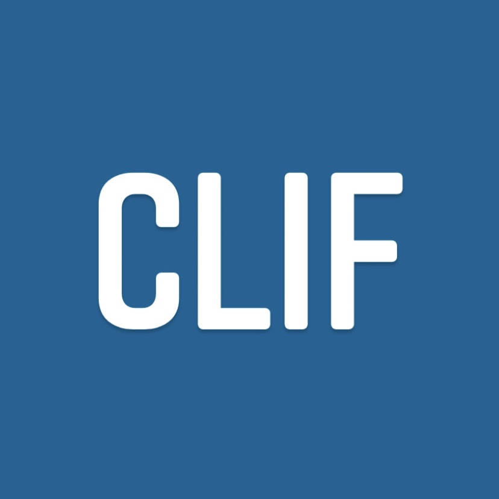
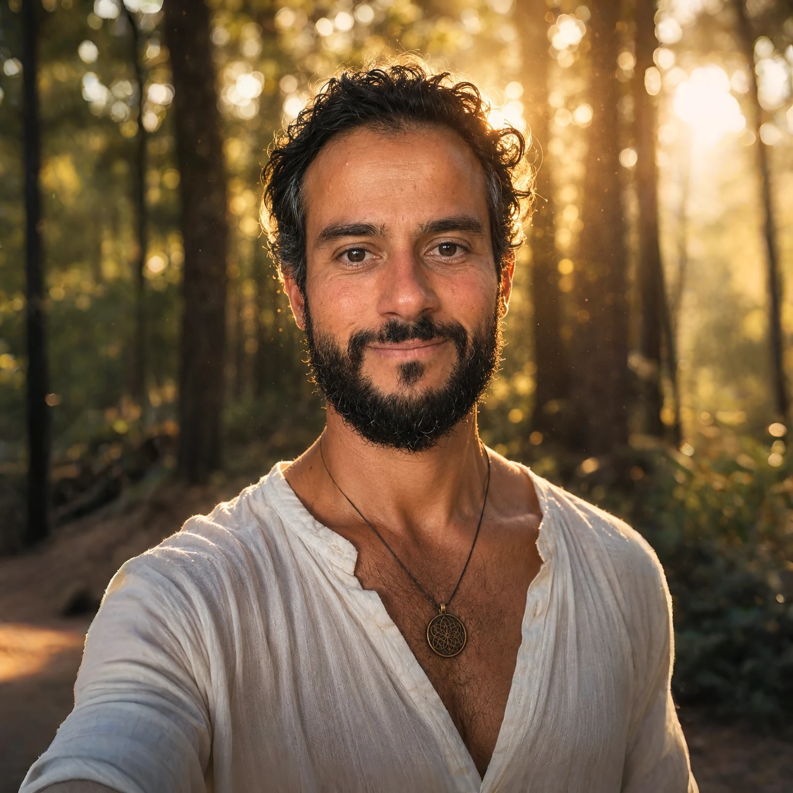
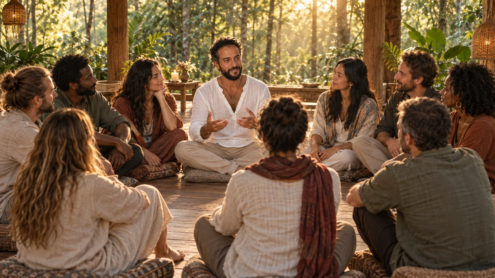

An open door to France

AN EXPRESSION OF POSSIBILITYA new country. A new possibility.
Helping people turn the idea of a life in France into a place they can call home.
Explore CLIFDISCOVER. EXPLORE. TRANSFORM.
Entrepreneur. Explorer. Transformation guide. A journey to discover yourself, inside and out.
Enter my worldA different life begins
with a different question.
Do you wake up in the morning feeling stuck?Do you live waiting for the weekend and paying your bills?Do you feel like there is a better tomorrow and that you can push the reset button and restart your life?I know that feeling.My mission is to serve through higher awareness and positive action — helping people reconnect with themselves and turn that clarity into a way forward.

MANY ROOTS. AN OPEN HORIZON.
In 2018, I was unhappy, burning out, and caught in the rat race—running to catch the subway every morning, living in airport terminals, moving from one client to another…
I was burning my life.
On my way to one of my clients, I was running through the airport… All of a sudden, I STOPPED.
Which client? Which destination? What is happening to me?
I had a wake-up call.
I quit my 9-to-5 consulting job, left my life in Paris and set off on a two-year trip around the world to discover myself inside out and reconnect with my mission…
TODAY, I GUIDE PEOPLE THROUGH THEIR TRANSFORMATION...
Are you ready to take the first step?
Lebanon → France
Into the unknown
Bringing it all together
Serge is the rarest of humans, a deeply spiritual person who has retained his sense of humor, charm and down to earthiness. He is a powerful leader and motivator, yet can be an entheusiastic follower when needed. A wordwide traveler who connects with everyone, Serge continues to learn and define what it means to be fully alive in the present moment. ✨🤍🙏🏼🤍✨
Someone who seens beyond the Human side. Powerful energy. 😉
Serge is a beautiful heart connected connected soul who lives to the fullest, always discovering new ways of being, new ways of living and inspiring with his unconditional ways of seeing. ❤️
He is this brightful soul and a bubble of love that spreads peace and happiness wherever he goes, no wonder why he is so loved by everyone. Actually it won’t be fair to describe him in just a few sentences; I rather recommend to share and discuss with him in order to feel his energy. 🙏🏼
Higher awareness. Positive action.
Ideas given a life in the world.
BUSINESS AS AN EXPRESSION OF A WAY OF LIFE.

AN EXPRESSION OF POSSIBILITYHelping people turn the idea of a life in France into a place they can call home.
Explore CLIFExploring how AI can support meaningful businesses — and create more space for the human behind them.
A vision for a meditation center and community rooted in presence, connection and a simpler way of living.
Transformation begins with discovering who you are.
Then exploring what is possible — and taking the first step.

I guide people through transformation: reconnecting with their strengths, their sense of self and their direction. Through presence and honest conversation, we create space to explore the life they want to build.
Explore a conversationCoaching, masterclasses, keynote conversations and collaborations — different ways to explore awareness and positive action. Bringing an entrepreneurial perspective and a deeply human journey into the same room.
Start a collaborationThree invitations at the heart of my work.
A starting point for your own reflection.
Before deciding what comes next, make space to notice what is already within you: your strengths, your values and the things that give your life meaning. Discovering your direction begins with listening to yourself. What feels true to you, beneath the roles and expectations you have learned to carry?
AN INVITATION TO REFLECTWhen the familiar no longer fits, it can be difficult to imagine another way. Exploration invites you to consider new perspectives, experiences and choices. You do not need every answer before beginning. A clearer vision, an honest conversation and one practical next step can become the beginning of your roadmap.
AN INVITATION TO REFLECTTransformation is a process of working with what life has taught you. Difficult experiences can reveal patterns, needs and possibilities you had not seen before. With awareness and thoughtful action, what once felt like a limitation can become a source of learning — and a starting point for change.
AN INVITATION TO REFLECTPrivate guidance for people and founders at a crossroads—bringing honest reflection, clearer choices and practical direction into the same room.
A 90-minute session for a decision, a transition or the conversation you have been postponing.
$300Explore the sessionFour private sessions, a personal direction map and structured weekly check-ins for meaningful change that can hold.
$1,800Apply for private guidancePrivate strategic guidance when business decisions and life decisions can no longer be separated.
From $3,600Start a conversationCoaching is a reflective and practical process. It is not medical, mental-health, legal, financial or immigration advice.
Twelve questions to help you see what is changing, what you are avoiding and what deserves your attention next.
Today, I bring together more than a decade of experience in business and technology with what travel and personal transformation have taught me.
My work moves between entrepreneurship, guiding others and sharing ideas. The intention stays the same: to help people discover their own direction and create meaningful change.
Ready to take the first step?
Explore a personal transition,
a business idea or a collaboration.
Let’s begin with a conversation.
Start with a short direction call. Choose a time that works for you.
Open booking calendar